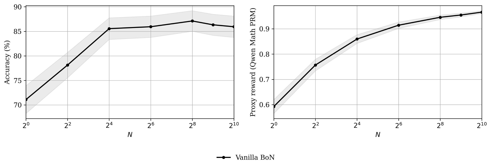
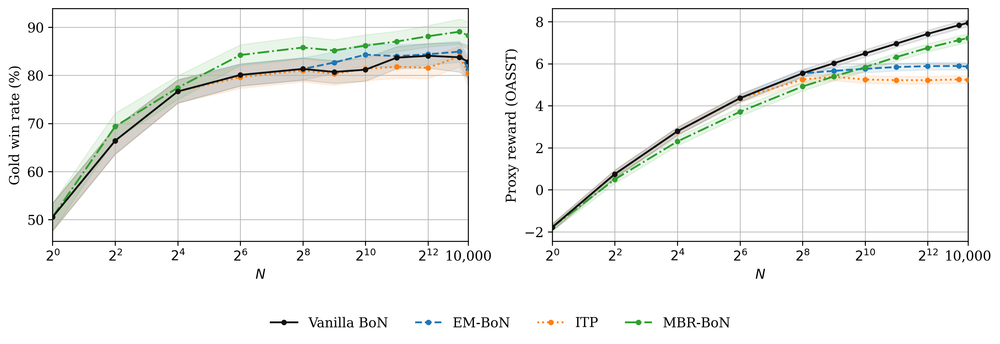
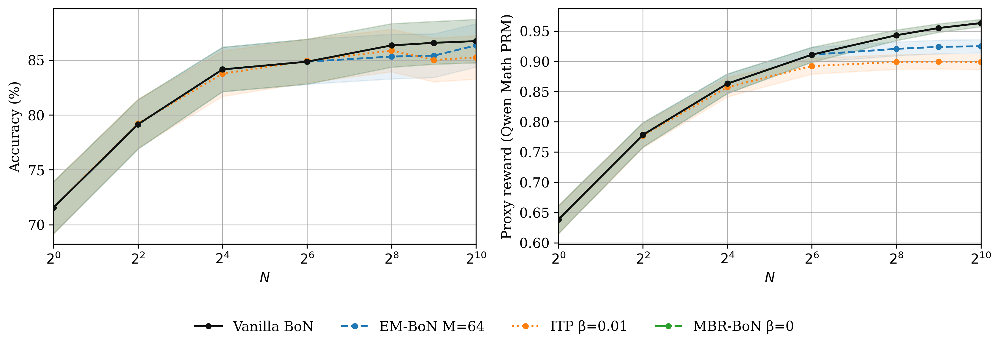
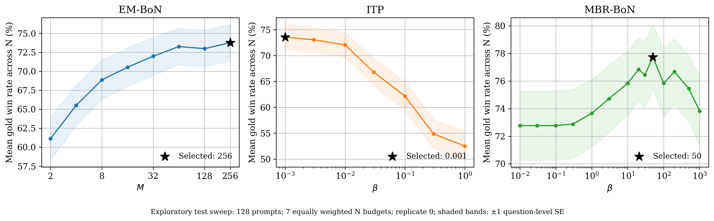

Project report
An Empirical Study of Reward Overoptimization Mitigation Strategies in Best-of-N
When does regularization help? Evidence across reward model qualities
A head-to-head comparison of MBR-BoN, χ²-BoN and EM-BoN against vanilla BoN.
Abstract. Best-of-N (BoN) sampling returns the response that a proxy reward model scores highest among N samples. It is known to overoptimize: as N grows, the proxy score keeps rising while true quality stalls or falls. Recent papers propose several training-free fixes: a similarity regularizer (MBR-BoN), a χ²-pessimistic target (χ²-BoN), and top-quantile selection with an EM-divergence regularizer (EM-BoN). Each is evaluated against vanilla BoN under its own gold metric, reward model and range of N, so the methods have not been compared against each other. This project compares all three, plus vanilla BoN, under one protocol: a shared response pool and the same proxy reward model for every method on a task, with each task scored by two different gold metrics. It also tests two predictions of Sriraman & Block's theory.
1. Introduction
Best-of-N sampling is the simplest way to spend inference-time compute on alignment. Draw N responses from a reference model πref, score each with a proxy reward model r̂, and return the highest-scoring one: y1, …, yN ~ πref(· | x) and ŷ = argmaxi r̂(x, yi). It needs no training and works with black-box models. Its weakness is that r̂ is only a proxy for the true reward r⋆. The larger N is, the more the selected response is chosen for the places where r̂ is wrong, so the proxy score keeps climbing while true quality plateaus or declines (Figure 1). This is reward overoptimization (Gao et al., 2023).

One point matters for everything below: the proxy score rising with N is not evidence of overoptimization. The maximum of N draws grows with N whether or not the reward model is any good. Overoptimization is visible only against a gold measure that the selection never saw, so every experiment here reports gold and proxy side by side.
Three recent papers propose training-free ways to mitigate this. Each is evaluated mostly against vanilla BoN, with its own gold metric (a gold reward model, an LLM-judged win-rate, or answer accuracy), its own proxy reward models and its own range of N.
Comparisons across BoN variants do exist. Ichihara et al. (2025) compare regularized BoN variants (KL- and Wasserstein-distance-regularized selection, MBR decoding, and their own stochastic and length-regularized versions) by win-rate against vanilla BoN under a gold reward model, using 128 responses per prompt on AlpacaFarm and hh-rlhf. That study predates χ²-BoN and EM-BoN, though, and to my knowledge no study compares these latest strategies with one another or with the earlier regularizers under a single protocol. A practitioner's question, which method should I use and when, therefore has no direct answer. This project tries to give one. Its contributions are:
- One protocol for all methods. The same candidate pool, the same proxy reward model and the same gold metric for every method on a task, so the methods differ only in how they pick.
- Two gold metrics per task. Each task is evaluated with two different gold measures (AlpacaEval: GPT-4o-mini win rate and a larger reward model, Skywork-Reward-Llama-3.1-8B; MATH: Math-Verify accuracy and GPT-4o-mini win rate), so that a conclusion about which method is better can be checked against the choice of evaluator (Section 3.2.5).
- Tests of theoretical predictions. Whether vanilla BoN with a tuned N is already near-optimal for win-rate, and whether EM-BoN removes the decline at large N, as Sriraman & Block predict (Section 2.7).
2. Background
Setting and notation
All methods below share one setting, following Huang et al. and Sriraman & Block. The definitions are collected here, and Appendix A.1 restates them in full.
- Prompts and responses. A prompt is x ∈ 𝒳 and a response is y ∈ 𝒴.
- Reference policy. πref : 𝒳 → Δ(𝒴) is the base language model, a conditional distribution over responses; πref(y | x) is the probability that it generates y for x. A policy π is any such conditional distribution.
- Proxy reward. r̂ : 𝒳 × 𝒴 → [0, Rmax] with Rmax ≥ 1 is the imperfect reward model available to the algorithm; r̂(x, y) estimates the quality of y for x. In the experiments this is the proxy reward model (Section 3.1.3).
- True reward. r⋆ : 𝒳 × 𝒴 → [0, Rmax] is the unknown quality that r̂ stands in for. The algorithm never sees it. In the experiments its role is played by the gold metric (Section 3.1.2).
- Inference-time algorithm. Given x and a sample budget N, the algorithm may draw N responses from πref(· | x) and query r̂ on them, and then outputs one response. Its output distribution is the policy π̂. All four rules in this report fit this template; MBR-BoN also queries an embedding model.
- Performance. Two yardsticks are used. Expected true reward J(π) := Ey∼π[r⋆(x, y)], and the win-rate Rr⋆(π) of a response from π against an independent sample from πref. Both are compared with a comparator policy π⋆, which gives the regrets J(π⋆) − J(π̂) and Reg(π̂) := Rr⋆(π⋆) − Rr⋆(π̂).
- Reward-model error. ε2RM := Eπref[(r̂ − r⋆)2] is the mean squared error of r̂ under πref. εpw is the pairwise error: how often r̂ and r⋆ disagree on which of two samples from πref is better.
- Distance from πref. The density ratio w := π/πref says how much a policy over- or under-weights a response relative to πref. Coverage Cπ := Eπ[w] measures how far π moves from πref, and the EM-divergence EM(π ‖ πref) := Eπref[(w − M)+] is the mass of π above density ratio M.
The prompt is fixed throughout, so x is often dropped from the notation.
2.1 Overview of the methods
The report compares vanilla BoN with three regularized variants. All four share the same interface: draw N candidates from πref, score them with r̂, and pick one. The variants differ from BoN only in what they change about the pick. Table 1 summarizes the four selection rules, and Sections 2.2–2.5 take them in turn. I use the names MBR-BoN, χ²-BoN and EM-BoN throughout. The original papers call the second one inference-time pessimism (ITP) and the third EM-regularized BoN.
| Method | Selection rule | Knob | What it guards against | Theory | Extra cost |
|---|---|---|---|---|---|
| BoN | argmaxi r̂(x, yi) | N | nothing | Prop. 1, Thm. 2–4 | none |
| MBR-BoN Jinnai et al. | argmaxi [ r̂i + β · (1/N) Σj sim(yi, yj) ] | β | responses far from the other samples (proximity to πref) | Prop. 5 (interpretation only, no guarantee) | N² pairwise similarities |
| χ²-BoN Huang et al. | sample from πref(y|x) · max(0, r̂(x,y) − λ) / β by sequential rejection sampling | β | scores far above what typical samples reach | Thm. 6, Prop. 7 | λ estimate, rejection loop |
| EM-BoN Sriraman & Block | keep the top ⌈N/M⌉ by r̂, pick one uniformly | M | the extreme tail (provably monotone in N) | Lemma 8, Thm. 9, Prop. 10 | none |
Table 1. The four selection rules compared. The Theory column points to the results stated in Sections 2.2–2.5.
2.2 Best-of-N
Vanilla BoN is the baseline that every method below modifies. It draws N responses from πref and returns the one with the highest proxy score:
Its only knob is N, and a larger N moves the output further from πref. That growing distance is what lets the selection exploit errors in r̂. The guarantees below use the notation defined at the start of this section.
Theoretical guarantee
Proposition 1 (KL divergence of BoN; Beirami et al.). For every N ≥ 1,
with equality when r̂ has no ties under πref.
Theorem 2 (BoN is optimal for win-rate at a tuned N; Sriraman & Block, Thm. 3). For any N ≥ 1, reference model πref, comparator π⋆ ≪ πref, true reward r⋆ and reward model r̂,
Theorem 3 (Lower bound for win-rate; Sriraman & Block, Thm. 4). For any non-atomic πref, any algorithm π̂A that only samples from πref and queries r̂ on its samples, and any ε < 1/2, there exist r̂ and r⋆ with εpw(r̂) ≤ ε, and a comparator π⋆ ≪ πref, such that
The two terms in (3) pull in opposite directions. The first grows with N and is the overoptimization: BoN's output can have density ratio up to N relative to πref, so it lands more often where r̂ and r⋆ disagree (Appendix A.3). The second shrinks with N and is the price of not having searched enough. Balancing them gives a best N, and (4) shows that, up to a logarithmic factor, no algorithm in this framework does better. The guarantee holds only at that tuned N. Past it BoN is not monotone, so the selection can still reward-hack and true quality can fall. The KL divergence of Proposition 1 grows without bound in N (derivation in Appendix A.2).
Theorem 4 (BoN under expected reward; Huang et al., Thm. 3.1 and 3.2). If N ≳ Cπ⋆ log(Rmax/εRM), then
and this dependence on N is tight: for any εRM ∈ (0, 1/4] and N ≳ 1 there is a problem instance with comparator coverage Õ(1) such that
Further, for every N there is such an instance with
Under this yardstick BoN pays a √N overoptimization term, and the best it can reach is regret of order ε2/3RM, worse than the order εRM that χ²-BoN reaches below in (14). Section 2.6 compares the two yardsticks.
Algorithm
Algorithm 1 spells out (1).
- Input: πref, proxy r̂, prompt x, sample budget N.
- Draw y1, …, yN ~ πref(· | x).
- return yi* with i* = argmaxi r̂(x, yi) (ties broken at random).
N = 1 returns a plain πref sample. The cost is N generations and N reward evaluations, with nothing else to compute or tune.
2.3 MBR-BoN
MBR-BoN adds to each score the average similarity between that candidate and all the others, here the cosine similarity of sentence embeddings:
Jinnai et al. present this Minimum-Bayes-Risk term as a proximity regularizer: it prefers responses near the center of what πref produces, where the reward model is more trustworthy. It is a soft bonus, not a filter, so a far-off response still wins if its score lead exceeds β times its proximity deficit.
Theoretical interpretation
Unlike the other two variants, MBR-BoN comes with no performance guarantee: Jinnai et al. give no regret bound and no statement about behavior in N. What the paper does prove is an identity that explains what the extra term measures.
Proposition 5 (The MBR term is a Wasserstein distance; Jinnai et al., Prop. 1). Let π̂N = (1/N) Σj δyj be the empirical distribution of the N samples, and take the transport cost c(y, y′) = −sim(y, y′). Then for every i
so the score in (8) is
MBR-BoN therefore prefers the sample that is closest to the sample cloud in Wasserstein distance, which is the sense in which it is a proximity regularizer (proof in Appendix A.4). This is an interpretation, not a guarantee: it says what the penalty measures, not how much it helps. Whether MBR-BoN resists overoptimization as N grows is therefore an empirical question, which the experiments address.
Algorithm
Algorithm 2 computes (8) from N samples.
- Input: πref, proxy r̂, similarity sim(·,·), prompt x, sample budget N, strength β.
- Draw y1, …, yN ~ πref(· | x).
- for i = 1 … N: si := r̂(x, yi) + β · (1/N) Σj sim(yi, yj).
- return yi* with i* = argmaxi si.
β = 0 is vanilla BoN; as β → ∞ the reward is ignored and the most central sample (MBR decoding) is returned. The proximity term needs N embeddings and N² similarities.
2.4 χ²-BoN
Huang et al. target the solution of a χ²-regularized reward-maximization problem,
where Dχ²(π ‖ πref) = ½ Eπref[(π/πref − 1)2] and β is the regularization strength. It has the closed form
where λ(x) is the constant that makes the right-hand side sum to 1. Candidates scoring below λ get probability zero, and above λ the probability grows with the excess score. A larger β pulls the policy toward πref.
Theoretical guarantee
Theorem 6 (Guarantee for χ²-BoN; Huang et al., Thm. 4.1). For any β > 0 and ε2RM ∈ (0, 1], if N ≥ c · (Rmax/β) · log(Rmax/(β · εRM)) for a sufficiently large absolute constant c, the sampler of Algorithm 3 in its original form returns a policy π̂Pes with
Setting β ≍ √(ε2RM / Cπ⋆), as long as N ≳ Ω̃(√(R2max Cπ⋆ / ε2RM)), we have
Proposition 7 (Necessity of coverage; Huang et al., Prop. 2.3). For any algorithm A and any 16 ≤ C⋆ ≤ maxπ Cπ, there exist r⋆ and r̂ with mean squared error at most ε2RM under πref, and a comparator π⋆ with Cπ⋆ ≤ C⋆, such that
The terms β · Cπ⋆ and ε2RM/β in (13) are a bias from being pulled toward πref and an overoptimization cost from trusting r̂ too much. Balancing them gives (14), which matches the lower bound (15) up to constants, so χ²-BoN is regret-optimal for expected reward. For any fixed β the guarantee holds for all N large enough, so performance cannot fall below it as N grows. This property is called scaling-monotonicity, and vanilla BoN lacks it.
Algorithm
Algorithm 3 draws approximately from (12) by sequential rejection sampling.
- Input: πref, proxy r̂, prompt x, sample budget N, strength β.
- Set the weight w(y) := max(0, r̂(x, y) − λ) / β, where λ is chosen so that w averages to 1 under πref (estimated from N samples), and let B be an upper bound on w.
- Draw y1, …, yN+1 ~ πref.
- for i = 1 … N: accept yi with probability min{ w(yi) / B, 1 }; return the first accepted yi.
- If none is accepted, return yN+1 (a plain πref sample).
A larger β lowers λ and keeps more candidates alive, which is a stronger pull toward πref; as β → 0 only the top candidates survive and the rule approaches vanilla BoN. As in the paper’s own experiments, this implementation estimates λ and runs the rejection loop on the same N samples, with proxy scores mapped to [0, 1] so that B = (1 − λ)/β. It differs in one place: if nothing is accepted it falls back to vanilla BoN (argmax r̂) instead of a random πref sample.
2.5 EM-BoN
Sriraman & Block regularize with the EM-divergence, which penalizes candidates that are unlikely under πref:
where EM(π ‖ πref) = Eπref[(dπ/dπref − M)+] is the mass of π above density ratio M. The solution is simple (Lemma 8), and Algorithm 4 approximates it from N samples.
Theoretical guarantee
Lemma 8 (Optimal EM-regularized policy; Sriraman & Block, Lemma 1). Let λ be the (1 − 1/M)-quantile of r̂ under πref, that is, Pπref(r̂(x, y) ≥ λ) = 1/M. Then the maximizer of (16) is
Theorem 9 (Guarantee for EM-BoN; Sriraman & Block, Thm. 5). For any M, N ≥ 1, reference model πref, comparator π⋆ ≪ πref, true reward r⋆ and reward model r̂, the N-sample procedure π̂M of Algorithm 4 satisfies
Proposition 10 (Separation from χ²-BoN; Sriraman & Block, Prop. 2). For every c > 1 there exist πref, π⋆, r̂, r⋆ and εpw ≪ 1 with εpw(r̂) ≤ εpw such that
Compared with (3), N is decoupled from the regularization M. The overoptimization term no longer grows with N, so performance does not decay as N grows, while a tuned M keeps the optimal win-rate that properly tuned vanilla BoN achieves. The N-sample procedure is within 1/N of πM in total variation (derivation of Lemma 8 in Appendix A.6). Proposition 10 says that, for win-rate, even the best-tuned χ²-BoN can be worse than the best-tuned EM-BoN by any constant factor.
Algorithm
Algorithm 4 approximates (17) from N samples.
- Input: πref, proxy r̂, prompt x, sample budget N, regularization M ≥ 1.
- Draw y1, …, yN ~ πref(· | x).
- Keep the k := ⌈N/M⌉ candidates with the highest r̂ (ties broken at random).
- return one of the k uniformly at random.
With N ≤ M, k = 1 and this is exactly vanilla BoN; M = 1 returns a uniform πref sample. For N > M the output stops drifting toward the extreme tail.
2.6 A unified view
Looking at the probability each rule gives to the N candidates makes the family easier to compare. BoN puts all the mass on the top candidate. EM-BoN spreads it uniformly over the top ⌈N/M⌉. χ²-BoN spreads it roughly in proportion to the score excess over λ. MBR-BoN instead changes the score itself, adding a proximity bonus, before taking the maximum. The first three act on how mass is distributed over the ranking, while MBR-BoN acts on the ranking itself.
Two yardsticks. The two theories behind these methods measure different things, which is why their conclusions differ. Huang et al. measure expected true reward and the reward model's squared error ε2RM. Under that yardstick vanilla BoN is statistically suboptimal and χ²-BoN is optimal. Sriraman & Block measure win-rate and a scale-invariant pairwise error εpw. Under that yardstick tuned vanilla BoN is already optimal, and what regularization adds is monotonicity in N. With a binary reward, expected reward is a special case of win-rate (Sriraman & Block), so the two yardsticks agree there. This is why the experiments score AlpacaEval by win-rate and MATH by accuracy (Table 2).
A shared idea. Each regularizer restrains how far the output can move toward the part of πref that has little mass and where r̂ is least reliable. χ²-BoN does it through the χ²-divergence, which is the coverage Cπ up to a constant. EM-BoN does it through the EM-divergence, which counts only the mass above density ratio M. MBR-BoN does it through a Wasserstein proximity to the sample cloud: its score is exactly r̂i − β · WD(δyi, empirical distribution of the N samples), by Appendix A.4. Ichihara et al. make a similar point from the robust-optimization side, reading a regularizer as an adversarial perturbation of the reward, so that the regularized method optimizes a worst-case reward.
Where MBR-BoN sits. The lower bound in Theorem 3 above is stated for algorithms that only sample from πref and query r̂ on the samples (their sample-and-evaluate framework). MBR-BoN also queries an embedding model for similarities between samples, which is extra information. As I read it, the bound therefore does not apply to MBR-BoN, and a gain over vanilla BoN would not contradict the theory. Neither theory paper analyzes MBR-BoN, so this is my reading and not a result from the papers.
2.7 What the literature predicts
The comparison is aimed at four hypotheses taken from the papers.
- H1. With a weak proxy, vanilla BoN's gold quality peaks at moderate N and then declines (Gao et al.). In the theory this is the overoptimization term that grows with N: N · εpw log(1/εpw) in (3) and √(N ε2RM) in (5).
- H2. Once tuned, EM-BoN and χ²-BoN do not decline at large N (Sriraman & Block; Huang et al.). In (18) the overoptimization term depends on M and not on N, and (13) holds for every N above a threshold of order Rmax/β.
- H3. With N tuned, vanilla BoN is already near-optimal for win-rate, so regularization buys monotonicity rather than a higher peak. Sriraman & Block themselves expect BoN “to remain the dominant alignment algorithm when monotonicity is not required.” This is the match between the upper bound (3) and the lower bound (4). For win-rate, Proposition 10 adds that χ²-BoN can fall behind EM-BoN even when both are tuned.
- H4. With a strong proxy there is little to mitigate, so the methods converge and regularization can only cost performance through tuning. Huang et al. report this pattern for strong proxies on MATH. In (3) and (5) a small εpw or εRM keeps the overoptimization term small over any practical range of N.
3. Experiments
This section describes the setup shared by all methods (3.1) and then reports the results (3.2), which are read against the hypotheses H1–H4 of Section 2.7.
3.1 Experimental setup
3.1.1 Shared candidate pool
For each prompt, a large pool of responses is generated once from πref with vLLM (FP16, temperature 1.0, top-p 1.0): 10,000 responses per prompt for AlpacaEval (1.28M in total, at most 512 new tokens) and 2,560 per prompt for MATH (655,360 in total, at most 1,536 new tokens). For each prompt and each of 5 seeds the pool is shuffled once and the first N responses are used, so the subsets are nested in N and all four methods see exactly the same candidates. N runs over {1, 4, 16, 64, 256, 512, 1,024, 2,048, 4,096, 8,192, 10,000} on AlpacaEval and up to 1,024 on MATH. At N = 10,000 the whole AlpacaEval pool is used in a fixed order. The 5 seeds therefore vary the candidate subset and the selection randomness over one fixed pool; they are not independent pools.
3.1.2 Tasks and gold metrics
| Task | Reference model πref | Prompts | Gold r⋆ |
|---|---|---|---|
| AlpacaEval | Qwen2.5-1.5B-Instruct | 128 | Pairwise win-rate of the selected response against one fixed response of the same policy (response index 0), judged by GPT-4o-mini with A/B order randomized (win 1, tie 0.5, loss 0). This is our own protocol, not the official AlpacaEval leaderboard. |
| MATH | Qwen2.5-Math-1.5B-Instruct | 256 | Final-answer correctness, checked with Math-Verify |
Table 2. Tasks and gold metrics. The two golds are different on purpose: a win-rate is the objective Sriraman & Block analyze, while accuracy is the binary reward used by Huang et al.
Why correctness and not reasoning quality for MATH. Outcome accuracy is cheap, objective and cannot be argued with, which makes it the cleanest gold. Its blind spot is a correct answer reached through flawed reasoning, which process reward models are known to reward. Answers are extracted from the final boxed expression, and a failed extraction counts as wrong.
3.1.3 Proxy reward models
| Proxy | Role | Used on |
|---|---|---|
| OASST RM (Pythia-1.4B) | Weak, general-purpose. Raw scalar score, can be negative. | AlpacaEval |
| Qwen2.5-Math-PRM-7B | Strong, math-specific process reward model. A response’s score is the product of the step-level positive probabilities, r̂ = ∏t pt ∈ [0, 1]. | MATH |
Table 3. Proxy reward models used for selection.
The two proxies differ sharply in quality, which matters for reading the results. Huang et al. find that with the OASST proxy, BoN gains little on MATH and for some policies falls below πref, while with stronger proxies BoN shows no visible hacking and does at least as well as their regularized method. A method can look good only because the proxy happened to be weak, so both regimes are needed.
3.1.4 Method configuration
MBR-BoN uses the cosine similarity of normalized all-mpnet-base-v2 embeddings, including each response’s similarity to itself, added to the raw proxy score. For χ²-BoN, proxy scores are mapped to [0, 1]: OASST scores by a fixed affine map with clipping, PRM scores as they are. Hyperparameters were chosen differently on the two tasks.
- MATH: tuned on 64 validation problems that share no ID or text with the 256 test problems, at N = 256, by mean Math-Verify accuracy (10 selection seeds for the stochastic methods; ties go to the weaker regularization). Grids: M ∈ {1, 2, 4, …, 256}; χ²-BoN β ∈ {10−4, 3·10−4, …, 1}; MBR-BoN β ∈ {0, 10−4, …, 20}. Selected: M = 64, β = 0.01, β = 0 (Figure 5). The validation set was split from the original test partition after some exploratory test runs, so it is not a fully untouched holdout.
- AlpacaEval: fixed from an exploratory sweep on the test prompts themselves (Figure 4): M = 256, β = 0.001, β = 50. AlpacaEval comparisons are therefore exploratory.
3.1.5 Metrics
For each method I plot gold against N, next to the proxy score for reference. Summary statistics are the peak gold over N, the final gold at the largest N, and the degradation Δ = peak − final, which measures overoptimization directly. For each prompt the 5 seeds are averaged first; the reported value is the mean over prompts with a ±1 standard error across prompts (128 for AlpacaEval, 256 for MATH). The seeds are not counted as independent samples, and the SE is conditional on the fixed pool and the stored judgments.
3.2 Results
3.2.1 Vanilla BoN scaling (AlpacaEval)
Question: as N grows, does the gold win-rate of vanilla BoN peak and fall while the proxy score keeps rising (H1)? The setting is 128 AlpacaEval prompts with the OASST reward model as the proxy.

Vanilla BoN. Gold starts near 50% at N = 1, as it should when the selected response is a single draw from πref. It climbs to about 80% by N = 26 and then creeps up to roughly 84% around N = 212. Over the same range the proxy reward keeps rising, from about −2 to 8. So the proxy keeps improving while gold has nearly stopped. Between N = 4,096 and N = 10,000 gold moves from 84.06% to 82.81% while the mean proxy score rises from 7.42 to 7.95, but a 1.25-point dip inside a ±2.5-point SE is not a clear decline. H1 is therefore only partly supported in this run. Gold saturates, it does not fall. For reference, the KL divergence of the BoN policy from πref, log N − (N − 1)/N, is at most about 8.2 nats at N = 10,000.
Regularized methods. EM-BoN and χ²-BoN flatten the proxy reward at about 5.9 and 5.3 beyond N ≈ 28, which is the intended effect of holding the selection near πref. Their gold curves track vanilla BoN up to about N = 28. EM-BoN then sits roughly 1–3 points above vanilla for N between 29 and 213, and χ²-BoN stays close to vanilla, about 2 points below it at N = 211–212. These gaps are small next to the bands, so I do not read them as a difference yet. MBR-BoN is above vanilla at every N ≥ 26, by roughly 3–6 points, while its proxy reward rises more slowly (about 7.2 against 8.0 at N = 10,000). That it reaches higher gold with a lower proxy score is what one would expect if the proxy and the judge disagree near the top of the ranking. Table 4 gives the numbers.
The last point. At N = 10,000 every gold curve dips: vanilla BoN to 82.81%, EM-BoN to 81.17%, χ²-BoN to 80.47% and MBR-BoN to 88.28%. N = 10,000 is also the one budget that uses the whole pool in a fixed order, so every seed sees the same candidates and only the stochastic methods vary across seeds. The dip is therefore measured with less subset randomness than the other points, and I do not read it as evidence of overoptimization on its own.
3.2.2 Method comparison
Question: how do MBR-BoN, χ²-BoN and EM-BoN compare with vanilla BoN in peak and final gold (H2, H3)?
| Method | AlpacaEval win rate (%) | MATH accuracy (%) | |||
|---|---|---|---|---|---|
| Peak, N ≤ 4,096 (N) | N = 4,096 | N = 10,000 | Peak (N) | N = 1,024 | |
| Vanilla BoN | 84.06 ± 2.53 (4,096) | 84.06 ± 2.53 | 82.81 | 86.72 ± 1.98 (1,024) | 86.72 ± 1.98 |
| EM-BoN | 84.38 ± 2.20 (4,096) | 84.38 ± 2.20 | 81.17 | 86.33 ± 1.98 (1,024) | 86.33 ± 1.98 |
| χ²-BoN | 81.80 ± 2.37 (2,048) | 81.56 ± 2.24 | 80.47 | 85.86 ± 1.93 (256) | 85.23 ± 1.98 |
| MBR-BoN | 88.12 ± 2.21 (4,096) | 88.12 ± 2.21 | 88.28 | 86.72 ± 1.98 (1,024) | 86.72 ± 1.98 |
Table 4. Mean ± 1 SE across prompts, 5 seeds. Bold marks the highest value in each column. On MATH, MBR-BoN was tuned to β = 0 and is identical to vanilla BoN.
Within the plotted ranges the degradation Δ = peak − final is zero for every method except χ²-BoN (0.24 points on AlpacaEval at N ≤ 4,096, 0.63 points on MATH). On AlpacaEval, MBR-BoN is about 4 points above vanilla BoN at N = 4,096, a gap of roughly 1.7 standard errors of either method; EM-BoN matches vanilla BoN (84.38 vs 84.06) while holding its proxy score near 5.9; χ²-BoN is about 2.5 points below. On MATH no method beats vanilla BoN. No paired significance test has been run, so these are descriptive differences.
3.2.3 Effect of proxy quality (MATH)
Question: does the benefit of regularization shrink when the proxy is strong (H4)? MATH uses the Qwen2.5-Math-PRM-7B proxy with hyperparameters tuned on the validation set.

Accuracy rises from 71.56% at N = 1 to 86.72% at N = 1,024 for vanilla BoN, with no decline anywhere in the range, while the PRM score rises from about 0.64 to 0.96. EM-BoN and χ²-BoN hold the proxy near 0.92 and 0.90 from N ≈ 64 on, and end at 86.33% and 85.23%, within one SE of vanilla BoN. With this proxy there is no visible overoptimization for regularization to fix, which is the situation H4 describes. A comparison with the weak OASST proxy on the same MATH problems exists only as an earlier single-run experiment and is not shown here.
3.2.4 Hyperparameter sensitivity
Question: how fragile is each method to its knob? A method that wins only at one carefully tuned value is less useful than one that is stable across a wide range.


On AlpacaEval the sweep peaks at the edge of the EM grid (M = 256) and at the smallest χ²-BoN β, so both selected values sit next to vanilla BoN; MBR-BoN peaks at an interior β = 50 and falls off on either side. On MATH, EM-BoN and χ²-BoN peak at interior values (M = 64, β = 0.01), while MBR-BoN is flat in β up to 10 and drops at 20, so the tie rule selects β = 0.
3.2.5 Changing the gold metric (in progress)
To check whether these conclusions depend on the choice of gold, two more conditions are being run: AlpacaEval scored by a larger reward model (Skywork-Reward-Llama-3.1-8B) with hyperparameters re-tuned on 32 held-out prompts, and MATH scored by GPT-4o-mini pairwise win rate with hyperparameters re-tuned on the 64 validation problems. Both separate the effect of re-scoring the same selections from the effect of re-tuning. Results will be added when they finish.
4. Discussion
H1, vanilla BoN overoptimizes with a weak proxy: partly. With the OASST proxy on AlpacaEval the proxy score keeps rising to N = 10,000 while gold win rate saturates near 84% from N ≈ 212; the dip at N = 10,000 is within the noise. Gold stalls, but a clear peak-then-fall was not observed in this range. This does not contradict the theory: (3) and (5) are upper bounds, so they allow a decline but do not force one. A plateau is what one sees when the growing overoptimization term roughly cancels the shrinking search term.
H2, regularized methods do not decline: consistent but not tested. EM-BoN and χ²-BoN stop the proxy score from climbing, as designed, and show no decline up to N = 4,096. Because vanilla BoN does not decline either, the monotonicity guarantee is not put under pressure here. Two further caveats apply to χ²-BoN. First, Theorem 6 covers the sampler in its original form, while this implementation reuses the N samples to estimate λ and falls back to vanilla BoN (Algorithm 3 note). Second, its sample condition N ≳ (Rmax/β) log(·) is of order 1/β with scores in [0, 1]: about 1,000 for β = 0.001 on AlpacaEval and 100 for β = 0.01 on MATH, before constants. Most of the plotted N are therefore below the range where the guarantee applies. For EM-BoN, Algorithm 4 equals vanilla BoN for N ≤ M, so with M = 256 on AlpacaEval the two methods can only differ from N = 512 on.
H3, tuned BoN is already near-optimal: largely supported among proxy-only methods. EM-BoN matches vanilla BoN on both tasks while capping the proxy, which is what Sriraman & Block predict: regularization buys stability, not a higher peak. MBR-BoN is the exception on AlpacaEval, about 4 points higher, but it also uses information the others do not (a separate embedding model), and its β came from an exploratory test sweep. That extra information also puts it outside the framework of the lower bound (4) (Section 2.6). χ²-BoN is about 2.5 points below vanilla BoN and EM-BoN on the AlpacaEval win-rate. That is the direction Proposition 10 allows, but the proposition only shows that such instances exist, and the gap is within about one standard error, so it is consistent with the theory rather than evidence for it.
H4, a strong proxy leaves little to fix: supported. With the math PRM, accuracy never declines, no regularized method beats vanilla BoN, and validation tuning chose β = 0 for MBR-BoN. Read through (3) and (5), the PRM has a small enough error that the overoptimization term stays below the search term up to N = 1,024.
In practice. With a strong, task-specific proxy, a well-chosen N for vanilla BoN is enough. With a weak, general-purpose proxy the selection rule matters: EM-BoN is a cheap way to keep vanilla-level quality without the proxy running away, and MBR-BoN is worth trying when an embedding model is available, pending a held-out re-tuning of its β.
5. Limitations
Known limitations of this study.
- Small models and few prompts. One 1.5B reference model per task, and 128 AlpacaEval prompts, so confidence intervals are wide and conclusions may not transfer to larger models.
- The gold is itself a measurement. The AlpacaEval gold is an LLM judge with its own biases, and the MATH gold sees only final answers.
- Unequal tuning effort. EM-BoN has a single knob (M), while MBR-BoN and χ²-BoN add a scale-dependent β and supporting machinery (an embedding model, a λ estimate, a rejection bound). Equal tuning budgets do not mean equal effort per method.
- Exploratory AlpacaEval tuning and one fixed pool. AlpacaEval hyperparameters were chosen on the test prompts, and the 5 seeds reuse one fixed response pool per prompt, so the reported SEs do not cover pool-to-pool variation.
- Hacking may not appear. With a strong proxy there may be nothing to mitigate. In that case the honest finding is that the methods tie, not that one wins.
Implementation approach
Candidate responses are generated with vLLM and stored per prompt, so every method and every N reuses the same pool. Proxy scores and MBR embeddings are computed once and cached, and selection and evaluation run offline on the stored responses; repeated judge comparisons are cached and reused. All four selection rules were implemented from the papers’ descriptions. Generation and scoring ran on two NVIDIA Quadro RTX 8000 (48 GB) GPUs under Ubuntu 22.04, with prompts split across the two GPUs as independent processes that resume from where they stopped. Main libraries: PyTorch, Transformers, vLLM, Sentence-Transformers, Math-Verify and the OpenAI API.
References
- Sriraman, V., & Block, A. “Revisiting the (Sub)Optimality of Best-of-N for Inference-Time Alignment.” arXiv:2603.05739, 2026.
- Huang, A., Block, A., Liu, Q., Jiang, N., Krishnamurthy, A., & Foster, D. J. “Is Best-of-N the Best of Them? Coverage, Scaling, and Optimality in Inference-Time Alignment.” arXiv:2503.21878, 2025.
- Jinnai, Y., Morimura, T., Ariu, K., & Abe, K. “Regularized Best-of-N Sampling with Minimum Bayes Risk Objective for Language Model Alignment.” arXiv:2404.01054.
- Ichihara, Y., Jinnai, Y., Morimura, T., Ariu, K., Abe, K., Sakamoto, M., & Uchibe, E. “Evaluation of Best-of-N Sampling Strategies for Language Model Alignment.” TMLR, 2025. arXiv:2502.12668.
- Beirami, A., Agarwal, A., Berant, J., D’Amour, A., Eisenstein, J., Nagpal, C., & Suresh, A. T. “Theoretical Guarantees on the Best-of-n Alignment Policy.” arXiv:2401.01879, 2024.
- Block, A., & Polyanskiy, Y. “The Sample Complexity of Approximate Rejection Sampling with Applications to Smoothed Online Learning.” COLT 2023. arXiv:2302.04658.
- Gao, L., Schulman, J., & Hilton, J. “Scaling Laws for Reward Model Overoptimization.” ICML 2023. arXiv:2210.10760.
- Hendrycks, D., et al. “Measuring Mathematical Problem Solving With the MATH Dataset.” arXiv:2103.03874, 2021.
- Zhang, Z., et al. “The Lessons of Developing Process Reward Models in Mathematical Reasoning.” arXiv:2501.07301, 2025. (Qwen2.5-Math-PRM-7B)
- Li, X., et al. “AlpacaEval: An Automatic Evaluator of Instruction-following Models.” github.com/tatsu-lab/alpaca_eval, 2023.
Appendix: Theory details
Section 2 states the theorems of each method without proof. This appendix fixes the definitions, proves the short results in full, and shows how the long regret bounds are put together. The long proofs are the original authors' work, so they are cited and not reproduced. Everything follows the setting of the papers: a fixed prompt, rewards in [0, Rmax], and a learner that can only sample from πref and query r̂ on its samples.
A.1 Notation
- Density ratio. For a policy π ≪ πref, w(y) := dπ/dπref(y), so Eref[w] = 1. Eref denotes expectation over y ~ πref.
- Win-rate and regret. φr(y, y′) := 1{r(y) > r(y′)} + ½ · 1{r(y) = r(y′)}, and Rr(π) := Ey~π, y′~πref[φr(y, y′)]. For a comparator policy π⋆, Reg(π̂) := Rr⋆(π⋆) − Rr⋆(π̂).
- Reward-model error. Pairwise: εpw(r̂) := Ey,y′~πref |φr̂(y, y′) − φr⋆(y, y′)|, which does not change if r̂ is multiplied by a positive constant. Squared: ε2RM := Eref[(r̂ − r⋆)2] (Huang et al.).
- Divergences. EM(π ‖ πref) := Eref[(w − M)+], the mass of π above density ratio M. Coverage Cπ := Eπ[w] = Eref[w2]. Dχ²(π ‖ πref) := ½ Eref[(w − 1)2] = ½ (Cπ − 1), which is Huang et al.'s convention.
A.2 The KL divergence of BoN
Proposition A.1 (Beirami et al.; the equality case of Proposition 1). Suppose r̂(y), y ~ πref, has a continuous distribution with CDF F, so there are no ties. Then
Proof. By symmetry among the N draws, and because there are no ties, for any measurable set A
The factor multiplying 1A(y) under Eref is the density ratio, which gives the first claim. It is at most N because F ≤ 1. Taking the logarithm of the density ratio,
Let Ui := F(r̂(yi)). Because F is continuous, U1, …, UN are i.i.d. Uniform(0, 1), and the selected sample has the largest of them, whose density is N uN−1. Integrating by parts,
Substituting this into the previous display, we obtain
At N = 10,000 this is the value quoted in Section 3.2.1:
A.3 Change of measure
Lemma A.2. If dπ/dπref ≤ L πref-almost surely, then
Proof. Both win-rates are expectations of φ over y ~ π and y′ ~ πref, so changing the measure on y from π to πref multiplies the integrand by w(y):
Taking absolute values and using 0 ≤ w ≤ L,
For BoN, L = N by Proposition A.1, so what r̂ and r⋆ disagree about on BoN's output is at most N · εpw. This is the first term of Theorem 2 and the reason it grows with N. For the target πM of EM-BoN, L = M, which is the sense in which the regularizer replaces N by M.
A.4 MBR-BoN is a Wasserstein penalty
Proposition A.3 (Jinnai et al., Prop. 1; Proposition 5 above). Let y1, …, yN be distinct samples, Q := (1/N) Σj δyj, and take the cost c(y, y′) := −sim(y, y′). With WD(P, Q) := minμ Σk,j μkj c(yk, yj), the minimum over all couplings μ of P and Q, we have for every i
and hence the MBR-BoN score is a penalized reward:
Proof. A coupling μ of δyi and Q must satisfy the marginal constraints
Since μ is non-negative, the first constraint forces μkj = 0 for every k ≠ i, and the second then forces μij = 1/N. So this is the only coupling, and
The sum includes j = i, the sample's similarity to itself, as in the implementation (Section 3.1.4).
A.5 The χ²-regularized optimum
Proposition A.4 (Huang et al.). For β > 0 the problem (11) has the unique solution (12), where λ(x) is the constant that makes the right-hand side sum to 1.
Proof. Write π through its density ratio w = dπ/dπref. The objective becomes
For any real ν, since Eref[w] = 1, we may subtract and add ν:
For each y, gν(r̂, w) is a concave quadratic in w. Setting ∂gν/∂w = r̂ − ν − β(w − 1) to zero and imposing w ≥ 0 gives the pointwise maximizer
The map
is continuous and non-increasing, tends to +∞ as λ → −∞, and equals 0 once λ reaches the top of the range of r̂. So some λ gives Λ(λ) = 1, that is Eref[w∗] = 1, and w∗ is feasible. For this λ and ν = λ + β, every feasible w satisfies
Strict concavity of gν in w makes w∗ the unique maximizer. A larger β needs a lower λ to keep the total mass at 1, so w∗ flattens toward 1 and the policy moves toward πref. This is the statement in Algorithm 3's note.
A.6 The EM-regularized optimum
Proposition A.5 (Sriraman & Block, Lemma 1; Lemma 8 above). Let 0 ≤ r̂ ≤ Rmax, M ≥ 1, and suppose r̂ has no atoms under πref. Let λ satisfy Pref(r̂ ≥ λ) = 1/M. Then πM = πref(· | r̂ ≥ λ) maximizes (16).
Proof. In terms of the density ratio, πM corresponds to wM = M · 1{r̂ ≥ λ}, which is feasible:
For any feasible w, Eref[w] = 1 lets us subtract and add λ in the objective:
For fixed t, g is concave and piecewise linear in w ≥ 0, with slopes
Since t ≤ Rmax and λ ≥ 0 (λ is a value of r̂ ≥ 0), the slope beyond M is at most −λ ≤ 0, so nothing is gained above M. Hence
(the case t = λ has probability 0). Therefore, for every feasible w,
The second equality holds because wM attains the pointwise maximum almost surely. Finally, let F be the CDF of r̂ under πref. The r̂-rank F(r̂(y)) of an output of πM is uniform on [1 − 1/M, 1], and the win-rate of y against an independent πref sample is F(r̂(y)). So
The N-sample procedure of Algorithm 4 is within 1/N of πM in total variation and has Rr̂ ≥ 1 − 1/(2M) − 1/N (Sriraman & Block, Section 5.3 and Appendix D).
A.7 How the regret bounds are assembled
Theorem 2. For any M > 0 let π⋆M be the policy closest to π⋆ in total variation among those with density ratio at most M. Then
- (iii) ≤ N · εpw by Lemma A.2 with L = N (Proposition A.1). This is the overoptimization term.
- (i) ≲ EM(π⋆ ‖ πref) + M · εpw. Win-rate is 1-Lipschitz in total variation, which gives the EM term (Block & Polyanskiy), and Lemma A.2 with L = M gives the second term.
- (ii) ≲ exp(−N/M). BoN returns the r̂-maximizer of every batch, so under r̂ it beats any other rule applied to the same batch, in particular a rejection sampler that approximates π⋆M to within exp(−N/M) in total variation.
Adding the three bounds,
Take M = N/log(1/εpw), assuming εpw ≤ 1/e so that M ≤ N and log(1/εpw) ≥ 1. Then e−N/M = εpw ≤ N · εpw and (M + N) · εpw ≤ 2N · εpw, so
which is Theorem 2.
Theorem 9. The same split is used with π̂M in place of π̂BoN. Terms (i) and (iii) now cost M · εpw each, because π̂M has density ratio at most M, which no longer grows with N. For term (ii), πM maximizes Rr̂ among policies with density ratio at most M, so it beats π⋆M under r̂. Combined with the rank computation at the end of A.6,
Adding the three terms,
which is Theorem 9.
Theorem 3. The lower bound uses a family of true rewards that differ from r̂ only on a small set A. If πref(A) ≤ ε, then
so εpw ≤ ε. The set A is chosen so that the algorithm puts little mass on it while π⋆ puts density ratio M on it, which makes the regret at least of order π⋆(A) − π̂A(A) (Sriraman & Block, Section 5.2).
A.8 Where the full proofs are
- Sriraman & Block (arXiv:2603.05739): Theorem 3 in Appendix C.1, Theorem 4 in C.2, Lemma 1 in D.1, Theorem 5 in D.2, Proposition 2 in D.3.
- Huang et al. (arXiv:2503.21878): Theorem 3.1 in Appendix F.3, Theorem 3.2 in F.4, Theorem 4.1 in G.1.
- Jinnai et al. (arXiv:2404.01054): Proposition 1 in their Appendix C.
- Beirami et al. (arXiv:2401.01879): the KL bound for general reward distributions.